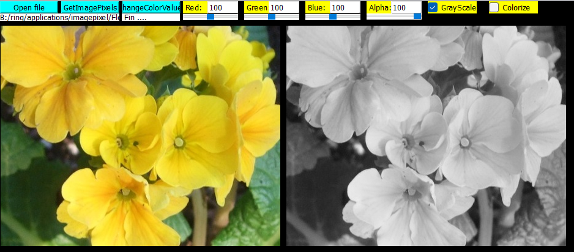
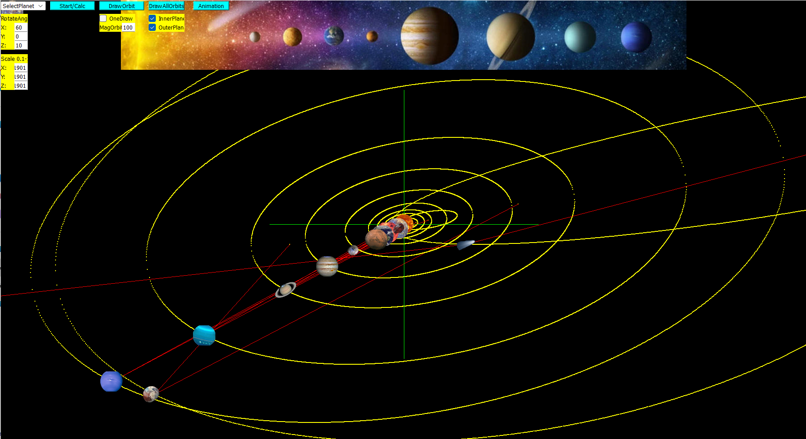
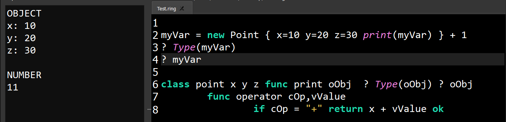
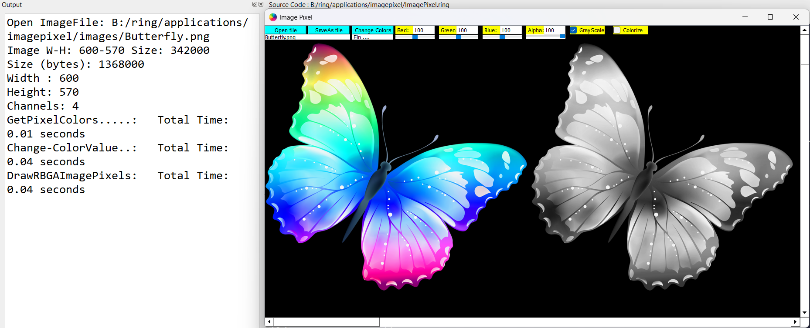

What is new in Ring 1.19
In this chapter we will learn about the changes and new features in Ring 1.19 release.
List of changes and new features
Ring 1.19 comes with the next features!
Image Pixel application
Hours Counter application
Planetary Orbits application
Listen to Quran application
More Samples
Ring for Windows 64bit
Better batch files for building Ring
For Loop - Better Performance
Calling Functions - Better Performance
Using Objects During Definition
Nothing() function
OptionalFunc() function
ParentClassName() function
FastPro Extension
Better TypeHints
Better RingRayLib
Better RingStbImage
Better Extensions Generator
Better Documentation
More Improvements
Image Pixel application
An example about processing an image pixels.
Hours Counter application
This is a simple calculator for teaching hours

Planetary Orbits application
An example about drawing and using the Matrix library
Listen to Quran application
Arabic application that can be used to listen to Quran.
We can install and run the application using the Ring Package Manager (RingPM).
ringpm install listentoquran
ringpm run listentoquran

More Samples
Added: samples/UsingFastPro
Added: samples/Language/Constants
Added: samples/UsingTypeHints/test6.ring
Added: samples/UsingQt/CustomDragAndDrop/customdraganddrop.ring
Added: samples/UsingQt/PrintPreview/simplereport.ring
Added: samples/UsingArabic/ArabicInCommandPrompt/DisplayArabic.ring
Added: samples/UsingMatrixLib/59-Matrix-Transform-Draw-Rotation.ring
Added: samples/UsingRayLib/more/ex5_wavingcubes_withoutthreads.ring
Added: samples/Language/OptionalFunc/Question.ring
Added: samples/Language/OptionalFunc/Answer.ring
Added: samples/General/Performance/emptyloop.ring
Added: samples/General/Performance/print.ring
Added: samples/General/Performance/math.ring
Added: samples/General/Performance/createlists.ring
Added: samples/General/Performance/len.ring
Added: samples/General/Performance/methods.ring
Added: samples/General/Performance/manylistitems.ring
Added: samples/General/Performance/search.ring
Ring for Windows 64bit
Starting from Ring 1.19 we provide 64bit version of Ring for Windows.
This provide access to more memory. Also, most of our tests indicates an increase of performance from 15% to 25%
This increase of performance is measured when we compare Ring 1.19 (32bit) and Ring 1.19 (64bit)
This is different from comparing Ring 1.19 (32bit) and Ring 1.18 (32bit) to see how much the new release is faster
Better batch files for building Ring
Using ring/buildvc.bat and ring/buildvc_x64.bat we can build everything (Ring Compiler/VM, Extensions, Tools, etc.) for Windows 32bit or 64bit
Ring comes with all of the dependencies except Qt
These batch files assume that we have Qt 5.15.16 (We can change the used Qt 5.15 version using the environment variables).
For Loop - Better Performance
The For Loop in Ring 1.19 is three times (3x) faster than Ring 1.18.
Tested using Victus Laptop [13th Gen Intel(R) Core(TM) i7-13700H, Windows 11]
Example:
t1= clock()
for t=1 to 100_000_000 next
t2 = clock()
? (t2-t1)/clockspersecond()
Time using Ring 1.18 (32bit) : 3.78 seconds
Time using Ring 1.19 (32bit) : 1.31 seconds
Time using Ring 1.19 (64bit) : 1.12 seconds
Calling Functions - Better Performance
Calling functions written in Ring code in Ring 1.19 is three times (3x) faster than Ring 1.18.
While calling functions written in C code in Ring 1.19 is four times (4x) faster than Ring 1.18.
Example:
t1=clock()
for t=1 to 1_000_000
result = max(t,t*2)
next
? result
t2 = clock()
? (t2-t1)/clockspersecond()
Time using Ring 1.18 (32bit) : 1.45 seconds
Time using Ring 1.19 (32bit) : 0.32 seconds
Time using Ring 1.19 (64bit) : 0.25 seconds
These improvements let the Stars animation sample works at 2350 FPS in Ring 1.19 instead of 500FPS in Ring 1.18

Using Objects During Definition
This release provides better support for using objects during definition where we can mix between this feature and other features like operator overloading without missing the output
Example:
The new point object will be stored directly in myVar during definition
We can pass myVar as parameter to the print() method
Using + 1 will call the operator() method
The operator() method output will be stored in myVar
This means that the Assignment operation is executed TWO TIMES!
The first Assignment is executed to support (Using objects during definition) where myVar is an object contains the new point while in the second time, the Assignment is executed to support storing the Operator Overloading output.
Note
RingQt samples uses this feature to quickly pass the parent window object to the other widgets.
Nothing() function
This function does nothing and can accept any number/type of parameters. The output will be Zero.
Some of the Use Cases
Performance measurements, where we can test the performance of calling functions written in C and we can change the number of parameters during tests.
In places of code that you want to write a function name, and it’s not defined yet.
To disable some feature/code by just changing the function name to nothing without changing the parameters or commenting the code.
In small programs, where you want to write a function that you can override from a Test program.
OptionalFunc() function
Using this function we can define functions similar to Nothing() but with a different name.
Syntax:
OptionalFunc(cFunctionName)
Example:
File: Question.ring
optionalFunc(:reply)
? "I love Programming, What about you?"
reply()
? "Ok, Thanks!"
Output:
I love Programming, What about you?
Ok, Thanks!
File: Answer.ring
load "Question.ring"
func reply
? "Me too!"
Output:
I love Programming, What about you?
Me too!
Ok, Thanks!
ParentClassName() Function
We can know the parent class name of an object using the parentclassname() function
Syntax:
parentclassname(object) --> Returns the parent class name of the object class
Example:
new Child { test() }
class Parent
class Child from Parent
func test
? "Parent: " + parentClassName(self)
Output:
Parent: parent
FastPro Extension
This new extension comes with the next functions
Bytes2List(cBytes,nWidth,nHeight,nChannels) —> aList // [[R,G,B],…]
List2Bytes(aList,nChannels) —> cBytes // “RGBA….”
updateList(aList,cCommand,cSelection,nPara1,[nPara2],[nPara3])
updateColumn(aList, [cCommand,nPara1,[nPara2],[nPara3]],…)
updateBytesColumn(cBytes, nColumns, nCount, nDiv, [cCommand,nPara1,nPara2,[nPara3]],…) —> cNewBytes
addBytesColumn(cBytes, nColumns, nCount) —> cNewBytes
Using the updateColumn() function we can update the list columns in one function call
We have a similar function called updateBytesColumn() that process bytes directly instead of using Bytes2List() and List2Bytes() functions.
Example from the ImagePixel application that convert the image to Gray

This also provides better performance compared to calling updateList() many times.
Better TypeHints
Added the next definitions:
Byte
Boolean
@override
Example:
load "typehints.ring"
o = new MyNewLib {
? isGreaterThanTwo(10)
? isGreaterThanTwo(1)
}
class MyLib {
boolean func isGreaterThanTwo(int x) {
if x > 2
return true
else
return false
ok
}
}
class MyNewLib < MyLib {
@override
boolean func isGreaterThanTwo(int x) {
? "Using override"
return x > 2
}
}
Output:
Using override
1
Using override
0
Better RingRayLib
The next functions are added to the RingRayLib extension
* vec2() --> Vector2
* vec2set(Vector2 vec,double x,double y)
* vec2getx() --> double
* vec2setx(double)
* vec2gety() --> double
* vec2sety(double)
* vec3() --> Vector3
* vec3set(Vector3 vec,double x,double y,double z)
* vec3getx() --> double
* vec3setx(double)
* vec3gety() --> double
* vec3sety(double)
* vec3getz() --> double
* vec3setz(double)
* vec4() --> Vector4
* vec4set(Vector4 vec,double x,double y,double z,double w)
* vec4getx() --> double
* vec4setx(double)
* vec4gety() --> double
* vec4sety(double)
* vec4getz() --> double
* vec4setz(double)
* vec4getw() --> double
* vec4setw(double)
* getcamera3dposx() --> double
* setcamera3dposx(double)
* getcamera3dposy() --> double
* setcamera3dposy(double)
* getcamera3dposz() --> double
* setcamera3dposz(double)
* getcamera3dtarx() --> double
* setcamera3dtarx(double)
* getcamera3dtary() --> double
* setcamera3dtary(double)
* getcamera3dtarz() --> double
* setcamera3dtarz(double)
* getcamera3dupx() --> double
* setcamera3dupx(double)
* getcamera3dupy() --> double
* setcamera3dupy(double)
* getcamera3dupz() --> double
* setcamera3dupz(double)
* getcamera3fovy() --> double
* setcamera3fovy(double)
* getcamera3type() --> double
* setcamera3type(double)
Better RingStbImage
The extension is improved to support the next features
Support UTF-8 file names on Windows
Added functions for writing images
int stbi_write_png(char const *filename, int w, int h, int comp, const void *data, int stride_in_bytes)
int stbi_write_bmp(char const *filename, int w, int h, int comp, const void *data)
int stbi_write_tga(char const *filename, int w, int h, int comp, const void *data)
int stbi_write_jpg(char const *filename, int w, int h, int comp, const void *data, int quality)
void stbi_flip_vertically_on_write(int flag)
Also, When using Strings that contains bytes, we supported updating a character using a numeric value which will be converted to (char) without the need to use the Ring char() function.
This provide better performance (3x faster, i.e. 300%) when generating images.
This feature could be used to update the images quickly while treating them as bytes without the need to convert them to Lists.
Example:
load "stbimage.ring"
width = 640
height = 480
channels = 3
cData = space(width*height*channels)
? "Creating the image..."
t1 = clock()
nIndex=0
for x=1 to height
for y=1 to width
cData[nIndex++] = x*x
cData[nIndex++] = x*y
cData[nIndex++] = x*2
next
next
t2 = clock()
# Write the image
? "Writing mynewimage.bmp"
stbi_write_bmp("mynewimage.bmp", width, height, channels, cData)
t3 = clock()
? "Time to create the image : " + ((t2-t1)/clockspersecond()) + " seconds"
? "Time to save the image : " + ((t3-t2)/clockspersecond()) + " seconds"
system("mynewimage.bmp")
Output:
Creating the image...
Writing mynewimage.bmp
Time to create the image : 0.12 seconds
Time to save the image : 0.00 seconds
Screen Shot:

Better Extensions Generator
The code generator for C/C++ extensions is updated and support defining extra names for functions
Using the predefined list (aExtraFunctionName) we can define the extra names
Example:
To define vec2() as another name for raylib_new_managed_vector2()
<runcode>
aExtraFunctionName + ["vec2","raylib_new_managed_vector2"]
aExtraFunctionName + ["vec2setx","raylib_set_vector2_x"]
aExtraFunctionName + ["vec2sety","raylib_set_vector2_y"]
</runcode>
Better Documentation
The CHM file is updated to support search
We added a new chapter: Using FastPro Extension
Also, The next chapters are revised and improved
Introduction
Performance Tips
Syntax Flexibility
The Type Hints Library
Building From Source Code
Extension using C/C++ languages
Tutorial: Ring Extensions in C/C++
Object Oriented Programming (OOP)
Frequently Asked Questions (FAQ)
More Improvements
Ring Notepad - Close Button - Force closing the web browser
Ring Notepad - Projects Files - Larger width
FindInFiles application - Replace Button - Check line selection
WinStartupManager application - Use extensions that comes with Ring
AnalogClock application - Set the image width to be like the window width
AnalogClock application - Draw the Clock directly once the window appears
EightPuzzleGame3D game - Better Code
SpaceShooter game - Better Code to close the game using the main menu
Pong2 game - Using CloseAudioDevice()
SuperMan2016 game - Reset FPS, energy value and player speed
GoldMagic800 game - Reset FPS and player speed
Sokoban game - higher speed
TowersOfHanoi simulation - higher speed
samples/AQuickStart/ODBC - Better Code
samples/UsingOpenGL/LevelsOfCubes - Reset FPS
samples/UsingOpenGL - Set the window icon
samples/General/TimeServer - Replace RingThreads with GameLib
samples/UsingQt/ListWidget/listwidgetitemvalue.ring - Better Code
samples/UsingOpenGL/stars - Using al_exit() function
samples/Drawing - Many samples are revised to use the Quit() method
samples/UsingQt/PrintPreview/printpreivewdialog.ring - Better Code
extensions/tutorial - filterlist() updated to use ring_list_deleteitem_gc()
Better Qt3D samples - Use Quit() method when closing the application
Better RingPostgreSQL samples
Better RingMySQL sample - samples/AQuickStart/MySQL/mysql7.ring
Form Designer - Better behavior when displaying the MenuBar editor
StdLib - OSCopyFolder() - Better Implementation
StdLib - OSCopyFile() - Better Implementation
MatrixLib - Added: RowReduceEchelonForm() function
MatrixLib - Added: MatrixTransform() function
BigNumber - Better code for the power function
ObjectsLib - Better Code when opening new windows
GameEngine - Support playing many sound files at the same time
RingQt - QPainter class - Added: drawRGBFListAtXY(), drawHSVFListAtXY() & drawBytes()
RingQt - Qt version is updated to Qt 5.15.16
Number() function - Don’t produce an error when the input is already a number
String() function - Don’t produce an error when the input is already a string
Low Level Functions - ringvm_calllist() - Better Output
Ring2EXE - Better Output
Batch Files - locatevc.bat - Support working from the “C:/Program Files (x86)” folder
Ring API - Added: RING_API_STATE to get a pointer to Ring State
Ring API - Added: RING_API_NEWLISTUSINGBLOCKS1D(int nItems) –> List
Ring API - Added: RING_API_NEWLISTUSINGBLOCKS2D(int nRows,int nColumns) –> List
Ring Compiler - Remove unnecessary ICO_FREESTACK after For-Loops
Ring Compiler - When we run ringsyntax.ring don’t load the same file again
Ring Compiler - Support using braces { } after (expr)
Ring Compiler/VM - Better performance when using (for-in) loops and large strings
Ring Compiler/VM - Revise (Using objects during definition) implementation
Ring Compiler/VM - Check the path limit (4096 characters) before execution
Ring Compiler/VM - Items structure functions - Better Performance
Ring Compiler/VM - HashTable - Better default parameters
Ring VM - For-Loop will produce a runtime error if used with wrong data-type
Ring VM - Function Call - Replace some Ring lists with C Structures
Ring VM - Use ICO_LOADFUNCP when loading C functions
Ring VM - Memory Pool - Three levels based on the allocation size
Ring VM - Memory Pool - Allocate 1,000,000 items at startup for level 1
Ring VM - Byte Code - Added: Flag Register
Ring VM - Byte Code - Added: Integer Register
Ring VM - Use ring_list_genarray() with global scope variables When using threads
Ring VM - Remove aAddressScope from VM structure
Ring VM - New instructions (ICO_PUSH2N, ICO_PUSH3N & ICO_PUSH4N)
Ring VM - Byte Code items count is changed to 4
Ring VM - ICO_LOADFUNCP instruction support replacing C function with Ring function
Ring VM - Better performance when deleting a scope - Avoid: ring_vm_gc_checkreferences()
Ring VM - Better format when printing the byte code
Ring VM - Variables - Reduce the required memory to store a variable
Ring VM - Arguments - Reduce the required memory to pass a value
Ring VM - ring_state_calloc() - Use the memory pool if possible
Ring VM - Better implementation for using (Return This)
Ring VM - Support adding items to a list during assignment using plus operator
Ring VM - Don’t allow deleting the Super variable (Used to access the parent class methods)
Ring VM - Operator Overloading - Don’t produce an error when it’s not necessary